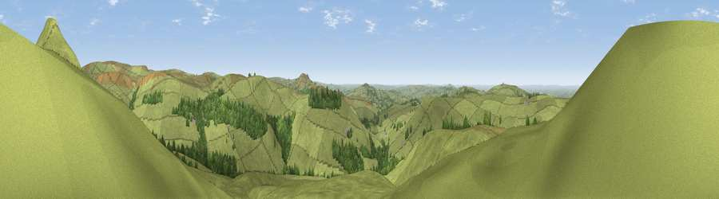

Viewpoint near Allgreave
#10830 in England · top 13% of its area beats it · near Allgreave · access?Where it is
The exact computed spot (SJ 97375 68975). Click the marker for map links.
Public access: no public right of way or access land is recorded at this exact spot — it may be on private land. Computed from Natural England's CRoW access layer and OpenStreetMap rights of way — not the legal definitive map. Always verify locally.
The view, rendered

A 360° render of this exact spot computed from the terrain model, tree cover and land cover — summer colours, afternoon light, calibrated against photographs of famous viewpoints. Real trees, hedges and buildings will differ in detail.
The panorama
Grey silhouette: terrain skyline in each direction (720 bearings, Earth curvature and refraction included). Dashed green: skyline with trees (+15 m) and buildings (+8 m) as obstacles. Blue strip: how far the ground is visible on each bearing.
Where the view opens
Wedge length = distance to the farthest visible ground on that bearing (vegetation-aware). Rings at 10, 25 and 50 km.
What fills the view
89% grassland · 10% woodland ·
Angular shares of the visible panorama (visual magnitude), not map area. Landscape diversity 0.16 (0–1 Shannon).
Key numbers
More beautiful places nearby
The staircase of upgrades: each row has a higher view potential than everything closer. Driving times are estimates from straight-line distance, calibrated against real road routing — check an actual route before setting out.
| Place | Direction | Drive | Score |
|---|---|---|---|
| Viewpoint near Allgreave | NNE · 1 km | ~2 min | 72.0 |
| Croker Hill | WSW · 4 km | ~10 min | 72.7 |
| Viewpoint near Meerbrook | SSE · 6 km | ~12 min | 73.5 |
| Viewpoint near Timbersbrook | SW · 9 km | ~17 min | 74.4 |
| Viewpoint near Mow Cop | SW · 16 km | ~28 min | 78.9 |
| Viewpoint near Mow Cop | SW · 16 km | ~29 min | 80.2 |
| Viewpoint near Harthill | WSW · 48 km | ~69 min | 80.5 |
| White Brow | NW · 53 km | ~75 min | 82.9 |
53.21782, -2.04077 · source: screening · position refined by local search. Computed location — check access rights before visiting.